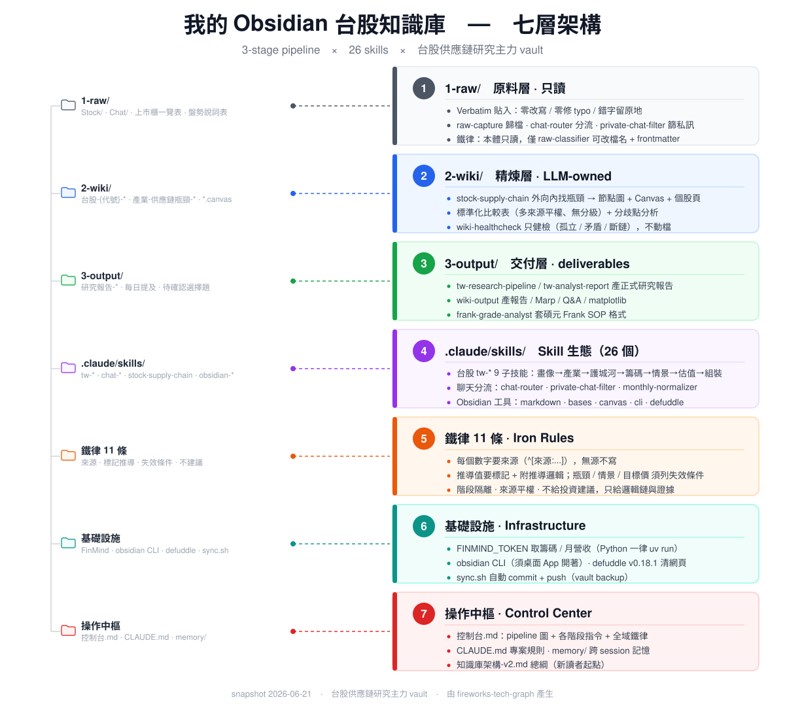
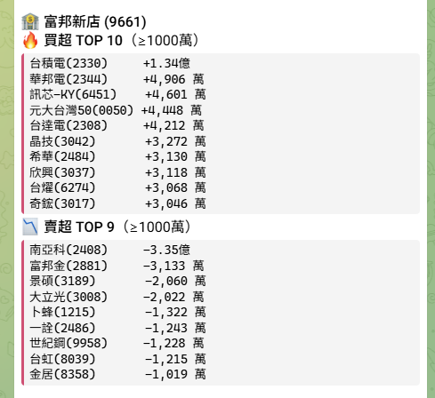
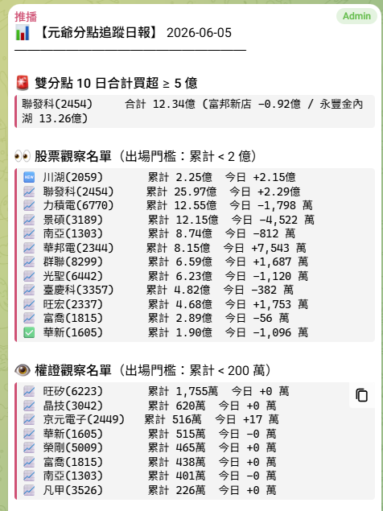
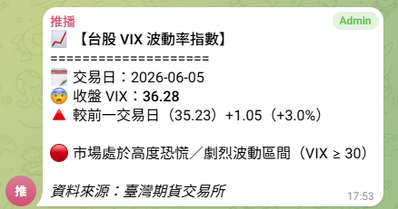

用基本面、量化與籌碼
做研究，再用 AI 把它工程化
政治大學企業管理學系三年級，政大 AI 應用社教學長，GPA 4.0。我從基本面、量化、籌碼三個角度研究台股，每一塊都讓 AI 幫我做得更快也更有紀律：核心是一座自建的投研知識庫，把個股研究系統化、又追得到來源；並且有一個量化策略回測勝率 78.2%、累積報酬 +527.4%，再加上一套每天自動追蹤主力籌碼的系統。除了研究，我也用 AI 把各種需求直接做成可用的產品，像 OpenStock 投研儀表板就是這樣從零做出來的。
個人投研知識庫 · 三階段 AI 知識管線（收料 → 精煉 → 出報告）
股票研究三大支柱
量化、基本面、籌碼。這三塊我都靠 AI 把例行工序自動化，把時間留給真正需要判斷的部分。
量化研究
從因子建構、資料品質檢核到 MAE/MFE 統計歸因，整套回測流程自己跑過一遍，確認 alpha 真的複製得出來、不是過度擬合。風險端則盯著 MDD 和 Sharpe，並把停損停利寫成明確規則。
基本面 · 個股研究
由上而下做研究：先看總經和產業競爭格局，再評估個股的財務結構、抓出催化劑。我習慣拿財務三表互相對照，找出帳面上看不出來的會計品質問題和隱藏風險，最後回到合理的風險定價。
籌碼面 × AI 自動化
從主力分點和權證還原，追蹤資金往哪裡去。研報萃取、資料蒐集、每天推播這些重複的事，我用 Vibe Coding 寫成程式自己跑，背後接著一座投研知識庫和一條籌碼資料管線。
精選專案
StockChain｜個人投研知識庫系統
以前看過的券商報告、新聞、群組裡的消息，散在各個聊天室和資料夾，過一陣子就忘了，更麻煩的是事後忘了某個數字當初是哪來的。所以我替自己蓋了一座投資研究資料庫，把這些全收進來，整理成查得到、又追得回原始出處的研究檔——現在想看某一檔股票，關於它的一切一問就全攤在面前，不必再到處翻。目前累積 300+ 檔台股個股與產業研究，還畫了光通訊、重電等等的供應鏈地圖。說穿了，就是把一個嚴謹研究員的工作方法，寫成一條可以重複跑的流程。
-
1
收料 · 1-raw 原料層每天讀到的券商報告、新聞、法說會資料自動歸檔、貼標籤，原文照收不改寫。
-
2
精煉 · 2-wiki 精煉層用 AI 萃取每份資料重點，整理成個股／產業檔，並畫出供應鏈地圖、標出誰卡關誰受惠。
-
3
出報告 · 3-output 交付層需要時一鍵把零散筆記彙整成結構完整、每個數字都附來源的個股研究報告。

OpenStock 投研儀表板
我用 AI 從零開發的全端投研平台，把台美股行情、處置股 ML 預測、三家券商的持倉與交易紀錄整合進同一個儀表板——輸入股號就能拿到模型給的機率和關鍵驅動因子。前端到資料庫一條龍用 Next.js + MongoDB 寫成，補上 56 個單元測試守住品質，還串了三個跨語言微服務去接券商 API。從一句需求到可部署的產品，整段都是我跟 AI 一起做出來的。



Telegram 主力籌碼追蹤機器人
三家主力分點（富邦新店、永豐金內湖、元大松江）的買賣超我每天自動抓，整套掛在 GitHub Actions 免費排程上自己跑，不用自架伺服器，我還能直接在 Telegram 傳訊息加減觀察名單。原本每天得手動盯的分點，現在變成一份準時送到手機、進出場門檻都寫清楚的日報。
其他作品
處置股量能過濾系統
用「監管處置事件」當市場行為異常的訊號，再疊上成交量篩掉流動性太差的標的。資料清洗、因子建構、回測整套自己跑，並用 MAE/MFE 檢查進場品質——贏單平均 8.18% 大於回檔 4.53%，代表進場點站得住腳。
即戰力的金融專業基礎
手上有三張金融證照（期貨商業務員、信託業業務人員、金融市場常識與職業道德），加上 GPA 4.0 和初級會計學大會考全校前段（PR 90+）的底子。需要扎實財金基礎的工作，我可以馬上接。
讓每個結論都能被檢驗的五條紀律
這五條是我寫進系統、強迫自己每次都遵守的規則，也是我覺得研究員本來就該有的習慣。
每個數字都附來源
沒有出處的數字不寫進結論，確保事後可追溯、可複查。
推估值一律標警告
凡是推算出來的評分、合理本益比、目標價，都標記並附上推導邏輯。
結論必須可被推翻
每個判斷都寫出「什麼情況下會失效」，強迫自己想反方。
矛盾來源全部並列
不同來源說法不一時平行並列、不預設誰對，再分析分歧根因。
出報告前先校準
用公司法說會 guidance 與真實月營收回頭校準估計值才下結論。
這些規則的目的，是把「嚴謹」變成每次都能重複執行的流程。
從訊號到系統，讓判斷可以被驗證
「成交量是市場最誠實的語言。在任何消息被公開之前，資金的流動已經留下第一手足跡——但真正的紀律，是把這些訊號轉化為可回測、可證偽的系統，而不是相信當下的直覺。最好的交易決策，應該在進場之前就已經完成。」
關於我
莊宇正（Chuang Yu-Cheng），國立政治大學企業管理學系三年級，GPA 4.0。高中起便對金融市場抱持強烈企圖心，2020 年開戶交易台股；早期歷經航海王時代、養成不停損習慣而受傷。進大學後在系統性商學訓練之外，透過長期實戰反覆檢討修正，逐漸形成一套屬於自己的交易系統。
雖非資工本科，透過 AI 與自學掌握程式交易，現在已能獨立完成從原始資料蒐集、因子建構、回測模型建立到績效驗證的全流程，並具備 AI 輔助開發能力，能把想法落地為使用的產品。
學歷
財務報表分析能力
金融證照
技能
找的是能從第一天就上手的
股票研究實習生嗎？
量化、基本面、籌碼我都做得來，也能自己寫工具把研究流程自動化。手邊有可以細聊的專案，歡迎來信。